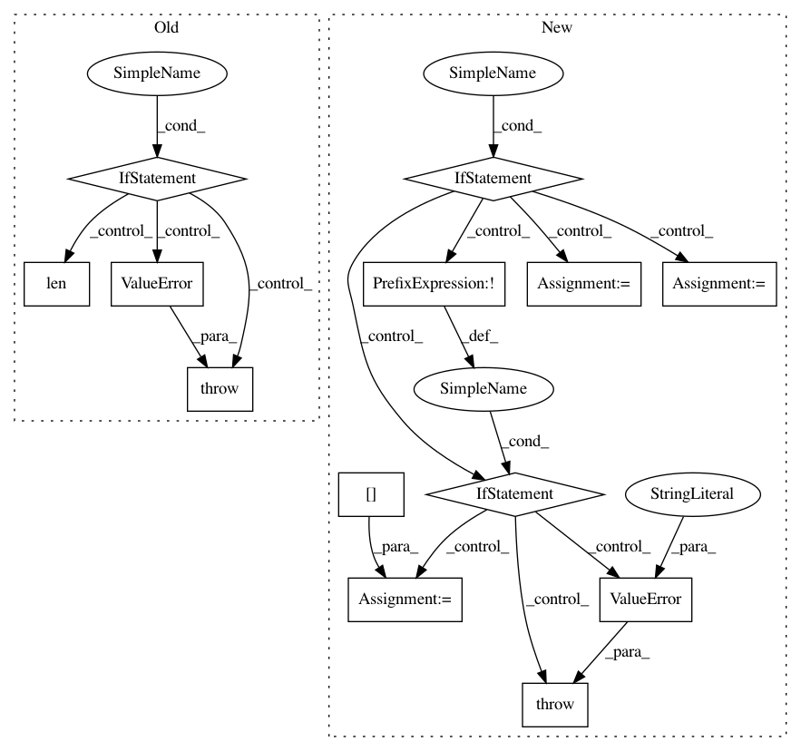

c25fa38deb4efc5445f64af3ec17eae0eb660d2f,keras/models.py,Sequential,add,#Sequential#Any#,409
Before Change
// to the input layer we just created.
layer(x)
if len(layer.inbound_nodes) != 1:
raise ValueError("A layer added to a Sequential model must "
"not already be connected somewhere else. "
"Model received layer " + layer.name +
" which has " +
str(len(layer.inbound_nodes)) +
" pre-existing inbound connections.")
if len(layer.inbound_nodes[0].output_tensors) != 1:
raise ValueError("All layers in a Sequential model "
"should have a single output tensor. "
"For multi-output layers, "
After Change
"Found: " + str(layer))
if not self.outputs:
// First layer in model: check that it is an input layer.
if not isinstance(layer, (InputLayer, legacy_layers.Merge)):
// Create an input layer.
// First, we need to infer its expected input shape and dtype.
if isinstance(layer, (Model, Sequential)):
// We were passed a model as first layer.
// This requires a specific way to figure out the
// input shape and dtype.
if not layer.layers:
raise ValueError("Cannot add an empty model "
"to a `Sequential` model.")
// In case of nested models: recover the first layer
// of the deepest model to infer input shape and dtype.
first_layer = layer.layers[0]
while isinstance(first_layer, (Model, Sequential)):
first_layer = first_layer.layers[0]
batch_shape = first_layer.batch_input_shape
dtype = first_layer.dtype
else:
// We were passed a regular layer, and it should
// know about its input shape. Otherwise, that"s an error.
if not hasattr(layer, "batch_input_shape"):
raise ValueError("The first layer in a "
"Sequential model must "
"get an `input_shape` or "
"`batch_input_shape` argument.")
batch_shape = layer.batch_input_shape
dtype = layer.dtype
// Instantiate the input layer.
x = Input(batch_shape=batch_shape,
dtype=dtype,
name=layer.name + "_input")
// This will build the current layer
// and create the node connecting the current layer
// to the input layer we just created.
layer(x)
if len(layer.inbound_nodes[-1].output_tensors) != 1:
raise ValueError("All layers in a Sequential model "
"should have a single output tensor. "
"For multi-output layers, "
In pattern: SUPERPATTERN
Frequency: 3
Non-data size: 13
Instances
Project Name: keras-team/keras
Commit Name: c25fa38deb4efc5445f64af3ec17eae0eb660d2f
Time: 2017-11-09
Author: francois.chollet@gmail.com
File Name: keras/models.py
Class Name: Sequential
Method Name: add
Project Name: bokeh/bokeh
Commit Name: 5f6b5d3851d0b719f401eafbfc569420405d1ef3
Time: 2016-08-16
Author: canavandl@gmail.com
File Name: bokeh/models/formatters.py
Class Name: FuncTickFormatter
Method Name: from_py_func
Project Name: dmlc/gluon-nlp
Commit Name: 489db85647d6de8a42f9fc5162e1e9ef0831800b
Time: 2018-08-02
Author: leonard@lausen.nl
File Name: gluonnlp/data/dataset.py
Class Name: LanguageModelDataset
Method Name: bptt_batchify